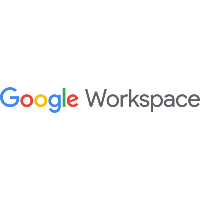
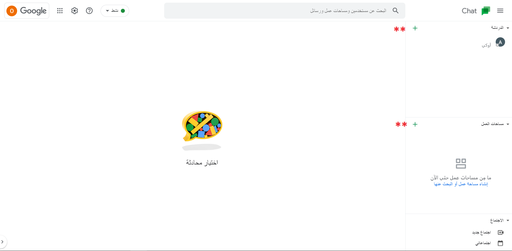
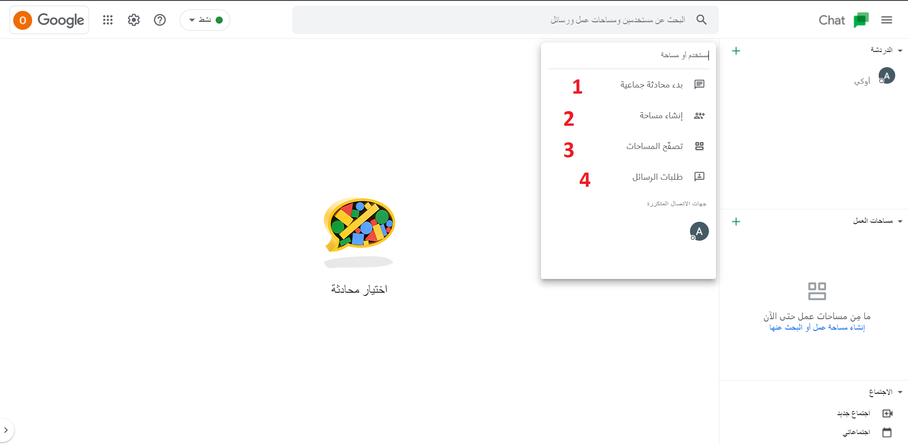

Google Workspace || جوجل وورك سبيس
الاسم: جوجل وورك سبيس
المهمة: خدمات عدة تقدمها جوجل لتسهيل عملية التواصل وتخزين البيانات
أنظمة التشغيل التي يعمل عليها: ويندوز، ماك أندرويد، آيفون "IOS"
الثمن: مجاني

أهم الخدمات التي يقدمها:
خدمة جيميل أو البريد الإلكتروني "Gmail"
-
تظهر الصفحة التالية عند الدخول إلى Gmail وهي الواجهة الرئيسية للبريد الإلكتروني
- لكتابة إيميل جديد وإرساله أو لتصفح البريد المرسل أو الوارد

- للدخول إلى Google Chat لإرسال رسالة عادية إلى إحدى جهات الاتصال، قد تظهر الرسالة التالية أسفل
الشاشة وهي لتفعيل إشعارات سطح المكتب، يمكن تفعيلها أو إلغاؤها حسب الرغبة
- لإنشاء غرفة محادثة جديدة أو للانضمام إلى غرفة موجودة مسبقاً

- للذهاب إلى Google Meet لإنشاء اتصال أو مكالمة فيديو


خدمة التقويم من جوجل "Calender"
-
تظهر الصفحة التالية عند الدخول إلى Calender وهي الواجهة الرئيسية للتقويم من جوجل
-
- لتغيير طريقة عرض التقويم بحيث يكون أسبوعيا أو شهريا أو غير ذلك
- نضغط على النقطة الحمراء مكان المربع الخاص باليوم والساعة في الوقت الحالي لإضافة حدث ما أو غيره
- لإنشاء حدث أو غيره
- بعد الضغط على علامة إنشاء حدث جديد كما في الخطوة رقم "2" سابقاً، تظهر النافذة التالية:
- لإضافة عنوان للحدث
- لاختيار نوع الحدث أو غيره
- لإضافة رابط لجوجل ميت في حال كان الحدث عبارة عن مكالمة أو اجتماع أو غيره
- عند الضغط على خيارات إضافية تظهر صفحة لإضافة تفاصيل أكثر عن الحدث كالتالي:
- لإضافة أشخاص إلى الحدث
- لإرسال إشعار تذكير قبل موعد الحدث بعشر دقائق على سبيل المثال، ويمكن تغيير الوقت من المكان المخصص
- لاختيار المنطقة الزمنية
- لإضافة وصف أو تفاصيل معينة أخرى عن الحدث
خدمة الاتصال ومكالمات الفيديو من جوجل "Googe Meet"
-
تظهر الصفحة التالية عند الدخول إلى Googe Meet وهي الواجهة الرئيسية لجوجل ميت
-
- ندخل اسم الاجتماع الذي نريد الانضمام إليه، نحصلع على هذا الاسم من الشخص الذي دعانا إلى الاجتماع أو المكالمة
- نضغط على "الانضمام" للانضمام إلى المكالمة، هذا في حال كنا نريد الانضمام إلى مكالمة موجودة بالفعل
- إذا كنا نريد إنشاء مكالمة جديدة، نكتب الاسم في الحقل المخصص ثم نضغط على "اجتماع جديد"
- بعد الضغط على "اجتماع جديد" في القائمة السابقة، تظهر النافذة التالية:
- لإنشاء اجتماع في وقت لاحق، ثم أخذ الرابط الذي يظهر في النافذة وإرساله إلى من الأشخاص المنضمين
- لبدء اجتماع فوري
- لإضافة هذا الاجتماع إلى التقويم الخاص بجوجل ثم إنشاء حدث يخص هذا الاجتماع
- عند الضغط على "اجتماع لوقت لاحق" تظهر النافذة التالية، نقوم بنسخ الرابط الموجود وإرساله لمن
يريد الانضمام:

خدمة المحادثات أو الشات من جوجل "Googe Chat"
- تظهر الصفحة التالية عند الدخول إلى Googe Chat وهي الواجهة الرئيسية لجوجل شات 
- لبدء محادثة جماعية، يتم إضافة جهات الاتصال عند الضغط على هذا الخيار
- إنشاء مساحة عمل، تظهر نافذة عند الضغط على هذا الخيار، يتم ملؤها بالمعلومات المطلوبة عن هذه المساحة
- لتصفح مساحات العمل الموجودة على الحساب
- لقبول أو رفض طلبات الرسائل التي تصل إلينا 
خدمة إدارة الملفات من جوجل "Googel Drive"
-
تظهر الصفحة التالية عند الدخول إلى Googel Drive وهي الواجهة الرئيسية لجوجل درايف
-
- لإنشاء ملف أو مجلد جديد
- يحتوي على أكثر الملفات التي تم فتحها
- يحتوي على الملفات الخاصة بي
- يحتوي على الملفات التي تم مشاركتها معي
- يحتوي على المفات التي عملت عليها مؤخراً
- يحتوي على الملفات التي تم تمييزها بعلامة النجمة
- سلة المهملات
- عند الضغط على "جديد" كما في الخطوة رقم "1" سابقاً، تظهر النافذة التالية:
- ﻹنشاء مجلد جديد
- لتحميل ملف من جهاز الكمبيوتر إلى غوغل درايف
- لتحميل مجلد من جهاز الكمبيوتر إلى غوغل درايف
- ﻹنشاء مستند نصي (شبيه بملف مايكروسوفت وورد)
- ﻹنشاء جدول بيانات (شبيه بملف مايكروسوفت اكسل)
- ﻹنشاء ملف عرض تقديمي (شبيه بملف مايكروسوفت بوربوينت)
- لإنشاء نموذج أو فورم (يحتوي على أسئلة وأجوبة)

- لمشاركة ملف مع شخص آخر، نضغط بزر الفأرة اليمين على الملف، ونختار مشاركة كما الصروة
التالية:
-
تظهر النافذة التالية:
- نكتب ايميل الشخص الذي نريد مشاركة الملف معه
- "حصري": تعني أن الملف سيفتح مع الشخص المذكور أعلاه فقط
- "المركز السوري للإعلام وحرية التعبير": وتعني أن أي شخص ينتمي للمركز يستطيع فتح الملف
- "أي شخص لديه الرابط": وتعني أن أي شخص يحصل على رابط الملف يستطيع فتحه
-
بعد تحدد الأشخاص الذين نريد المشاركة معهم، تظهر النافذة التالية:
- في الحقل، نكتب محتوى الرسالة لإرسال الملف معها
- "مشاهد": تعني أن الشخص أعلاه يستطيع قراءة الملف فقط، دون تعليق أو تعديل
- "معلق": يستطيع التعليق فقط بدون التعديل
- "محرر": يستطيع التعديل والتعليق
- يمكننا نسخ الرابط وإرساله لمن نريد